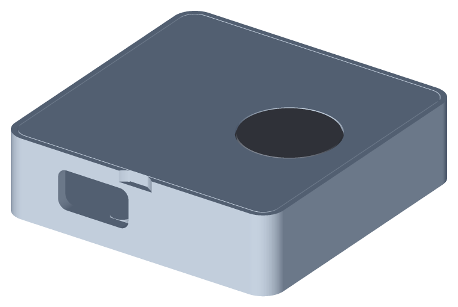
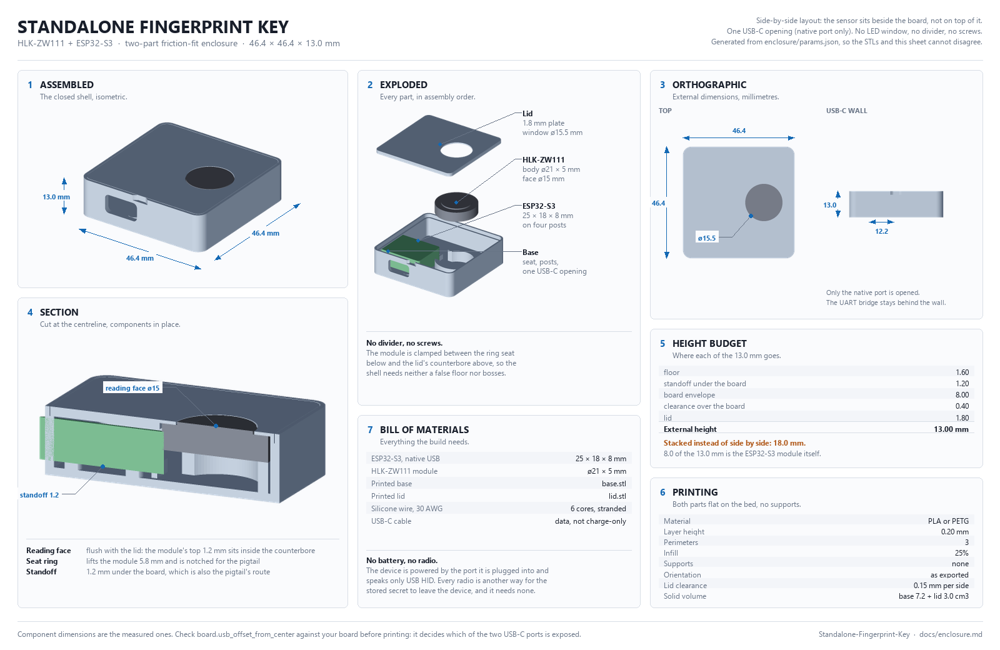
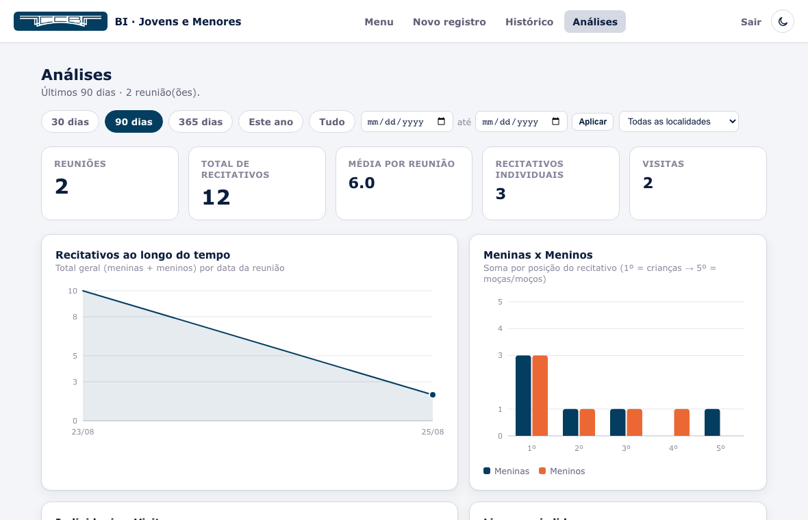

Hardware + firmware / 2026
Standalone Fingerprint Key
Chave biometrica standalone para macOS com ESP32-S3, sensor capacitivo, USB HID, protocolo customizado, testes de framing e case parametrico impresso em 3D.
portfolio 2026 / nicholasbirochi.com.br
Software, dados, hardware e IA local.
Eu construo projetos que saem do papel: sistemas web, BI local, automacoes, simuladores, firmware e experiencias digitais com acabamento visual e criterio tecnico.

perfil
A vitrine agora prioriza os projetos mais recentes e fortes: hardware com firmware, BI local, automacao com IA, sistemas web e jogos. Cada bloco mostra decisao tecnica, contexto, stack e resultado visual sem entupir a tela.
selected work
Uma selecao mais profissional, com os cases que contam melhor a sua evolucao: backend, dados, interface, automacao, hardware e produto.

Hardware + firmware / 2026
Chave biometrica standalone para macOS com ESP32-S3, sensor capacitivo, USB HID, protocolo customizado, testes de framing e case parametrico impresso em 3D.

Produto local / 2026
Sistema Flask + SQLite para registrar formularios, operar offline na rede local, gerar QR code de acesso e entregar analises com graficos SVG sem depender de nuvem.
Automacao IA / 2026
Fluxos locais de IA com processamento de documentos, automacao, privacidade e orquestracao entre ferramentas sem expor dados sensiveis desnecessariamente.
Dados corporativos / 2026
Workflows de Power BI, extracao e padronizacao de relatorios para reduzir trabalho manual e melhorar leitura operacional em ambiente corporativo.
Web app / 2025
Aplicacao Spring MVC com catalogo, carrinho em cookie, pedidos, autenticacao por sessao, perfis de acesso, upload de imagens e CRUD administrativo.
Game design / 2026
Jogo indie 2D em Godot sobre paz, amizade e narrativa curta, pensado para solo ou cooperativo, com arte suave e estrutura preparada para capitulos.
stack
Java, Spring MVC, Python, Flask, C#, WinForms, HTML, CSS e JavaScript sem dependencia pesada quando nao precisa.
SQLite, PostgreSQL, SQL Server, Power BI, extracao, dashboards e analises voltadas para decisao operacional.
ESP32-S3, firmware, USB HID, sensores, testes de protocolo e modelagem parametrica para impressao 3D.
Interfaces responsivas, operacao local, experiencia de instalacao simples, documentacao e matriz de seguranca.
seguranca aplicada
Cada projeto tem uma superficie diferente. Site estatico nao precisa de login ou CSRF, mas um e-commerce precisa de sessao, senha, upload, validacao e controles de abuso.
contato